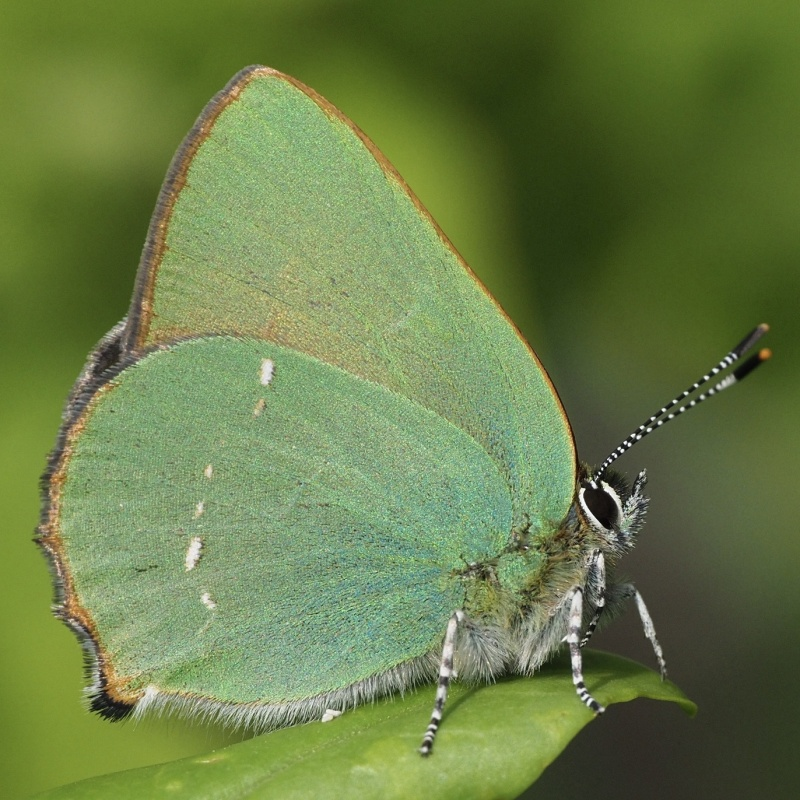

Callophrys rubi
- Common name
- Green Hairstreak
- Deutscher Name
- Grüner Zipfelfalter
- Family
- Lycaenidae
- Family common name
- Gossamer-winged Butterflies
- On the wing
- April to E July
one generation
- Habitat
- Open land and dwarf shrub zones. Limestone grasslands, heaths, moors, very sparse forests, alpine pastures.
- Larval host:
- The larvae feed on Fabaceae such as brooms or sainfoin, on Cistaceae (Helianthemum nummularium) and Ericaceae. In acidic grasslands the caterpillars often live on Genista sagittalis, in calcareous ones on Helianthemum nummularium. In moors and on sand heaths or dwarf-shrub-dominated slopes in the central Alps, the eggs are often laid on Vaccinium sp.
Range Map
Seasonality